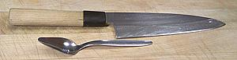
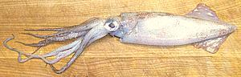
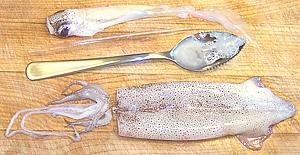
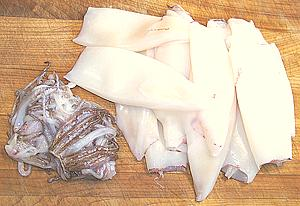
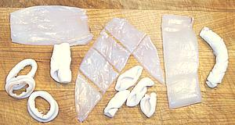
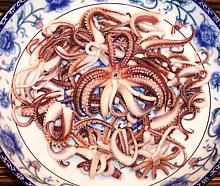

SAFARI
Users
Cleaning
Fresh squid is generally sold whole as caught, so you'll have to clean and prepare it yourself. Whole uncleaned squid of this sort can weigh from 1 ounce each for small to about 4 ounces for medium. Completely cleaning 2 pounds of small squid (about 30 count) should take you 35 minutes, not much more than 1 minute each. If you need to save time, Asian markets sell trays of frozen squid tubes already cleaned and skinned, with or without tentacles.
Yield:
A pound of fresh uncleaned squid of 1 ounce size yields about 6-1/8 ounces (38%) of cleaned bodies and 3-1/3 ounces (21%) of tentacles, making a total yield of 9-3/8 ounces (59%). Larger squid will yield a little better.
All you really need for squid is a cutting board, a sharp kitchen knife
and a grapefruit spoon. Narrow pointy grapefruit spoons are best for
squid and grapefruit but can be hard to find these days.

We start out with whole fresh squid about 10 or 12 inches long including
the tentacles. These can be obtained in bulk from most Asian markets.
 First cut off the tentacles right in front of the eyes. If you get it just right the beak will stay behind with the eyes and the tentacles will still be together in a star formation. more likely the beak came with the tentacles, just push it out and discard.
Next place the squid body in the palm of your hand and wrap your fingers around just tight enough to keep it from slipping away. Pull the head off and the innards will come along with it.
Note: some recipes call for squid ink so if you're cooking one
of those locate the ink sack in the pile of innards and remove it. In my
experience, squid sold around here have little or no ink, so it's easier
to order it from any on-line emporium specializing in Spanish food
products.
You should now be able to feel the end of the nearly transparent "pen". Pull it straight out. If the squid was handled roughly it may be broken in which case fish out the pieces - here the grapefruit spoon comes in handy, and long nose pliers may help.
Now lay the squid body flat on your cutting board. With the fingers of one hand hold down the tip of the tail. With the other hand run the side of your thumb flat across the body from the tail to the head end, pushing out all the remaining jelly stuff.
 Break the skin and just rub it off under cold running water. You may or may not loose one or both of the tail fins doing this, I usually try to keep the fins on. You will end up with white squid bodies and a small pile of purple tentacles.
Note:
Do not cook the tentacles with the bodies if you want bright white bodies, the skin pigment bleeds and will stain the white bodies an unappetizing color. You can cook them in the same water after the bodies have been removed.Cutting
 You may now cut the body into whatever shape you desire. Commercially squid are most often just cut crosswise into rings - easy, but boring. You can easily cut them to form other shapes.
Note:
When cutting tubes open to lay flat, cut along the line where the "pen" was removed for neatest results.Note:
Squid always curls from front to back and inside out, so if you score the flesh for decorative effects score the inside surface.The photo shows (top left) half the body split
lengthwise. When cooked it rolls up to form the shape just below. In the
center, a whole squid body was split lengthwise, flattened out and cut as
shown. The curls that result are below it. On the right, the body has been
split lengthwise, flattened and cut crosswise into three pieces (one shown).
The flesh was scored to form a pattern on the curled tube.
Cooking
 If it's really, really fresh, you don't even have to cook it. Squid is one of my favorite sushi items.
Squid should be cooked for a very short time at high temperature or simmered quite a long time. In between it has all the edibility of rubber bands. A strongly acid marinade as for Adobo may relieve this somewhat. Long cooked, the squid has a somewhat different flavor and the texture is firm but not crunchy as it is with very short cooking.
Cooked for less than 20 seconds, yield will be near 100% of raw, but much longer and the squid will shrink alarmingly. Your big pile of raw squid will become a much smaller pile, and it's weight will be about 60% of raw. Most of the shrinkage happens in the first couple of minutes. Recipes must be designed to take this into account.
If short wet cooking, you should have the water at a rolling boil and drop in a small amount of squid so the water stays hot. Pull between 10 and 20 seconds depending on thickness of the squid. A minute will get you tough squid. An easy way to do this is to heat a pot filled almost to the brim. Put some squid in a wire strainer and lower it into the boiling water so the squid is submerged. Count the seconds, then pull out the strainer and immediately quench the squid in cold running water.
If you are going the long simmering route, check your squid often for taste and texture. You want to pull it as soon as it becomes tender enough, but still has some bite. Overcooked squid loses both flavor and texture. The time will be about 40 minutes in most cases.
When frying, squid may be lightly battered or not battered at all. For unbattered squid get your oil plenty hot and stir fry for 10 or 15 seconds. For battered squid deep fry a small amount at a time in very hot oil (390°F/200°C) and for the minimum time needed to color the batter.
The tentacles are lovely, but if you are wet cooking your squid and
want the bodies nice and white, cook the tentacles separately, either in
different water or after all the bodies have been cooked. The tentacles
have purple skin on them and will discolor the white bodies if cooked
with them. For some recipes with lots of other colored ingredients it
doesn't matter.